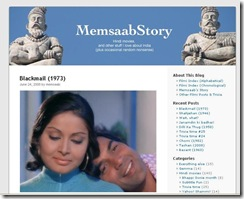
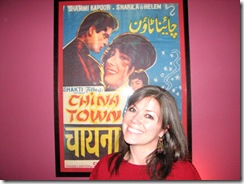

महफिल पर नूतनजी की आवाज में छबीली फिल्म का गीत सुनवाते समय मैने पोस्ट में जिक्र किया था कि यह गीत मुझे कहाँ से मिला जब आप जानेंगे तब चौंक जायेंगे। ये गीत मैने बहुत दिनों तक खोजा और बहुत जगहों पर खोजा परन्तु मुझे मिला यह अमरीकी महिला ग्रेटा के ब्लॉग पर! विदेशी महिला के ब्लॉग पर नूतन जी का गाया हुआ हिन्दी का दुर्लभ गीत…..?
जी हाँ ग्रेटा के ब्लॉग पर। ग्रेटा के ब्लॉग पर हिन्दी फिल्मों के बारे में बहुत सी जानकारी मिली। जो मैं तो क्या हिन्दी फिल्मों के कई जानकार नहीं जानते होंगे। ग्रेटा अपने ब्लॉग पर सुप्रसिद्ध निर्देशक राजकुमार हिरानी के लिये एक जगह लिखती है-
Early last year, I met an Indian filmmaker. I’m a big fan of his work, and he seemed quite surprised to find an American girl who had seen his films. During a conversation he mentioned the song “Mera Naam Chin Chin Chu” from the film Chalti Ka Naam Gaadi. “Hmm,” I said, “that’s from Howrah Bridge, not Chalti Ka Naam Gaadi.” His jaw dropped and he stared at me, astonished.
यानि सुप्रसिद्ध निर्देशक राजकुमार हिरानी से भी उन्हें ज्यादा पता है। ग्रेटा ने कम से कम 600 हिन्दी फिल्में देखी है, देखी क्या उन्होने हिन्दी फिल्मों को जैसे जीया है। अजय देवगन और काजोल की कट्टर प्रशंसिका ग्रेटा के ब्लॉग पर आपको स्व. कुन्दन लाल सहगल से लेकर स्व. पृथ्वीराज कपूर और 1945 में बनी फिल्म हुमाँयु से लेकर 2008 में बनी फिल्म टशन के लिये भी आपको जानकारी मिल जायेगी।


ग्रेटा के अपने आप को मेमसाब कहलवाना पसन्द करती है। और उन्होने अपने ब्लॉग का नाम भी यही रखा है “मेमसाब्स स्टोरी“। मैं मेमसाब के इस हिन्दी फिल्म प्रेम से बहुत आश्चर्यचकित था, उनके ब्लॉग की कई पोस्ट पढ़ने के बाद तो क्या हाल हुआ होगा मेरा आप अंदाजा भी नहीं लगा सकते।
ग्रेटा ने एक एक पोस्ट के लिये कई दुर्लभ फोटो भी अपने लेखों में जोड़े हैं। ग्रेटा अपने पाठकों से पहेलियाँ भी पूछती रहती है, मसलन यह फोटो किसका है या ये गीत किस सुप्रसिद्ध अभिनेत्री ने गाया है? और इसी पहेली के चलते मुझे नूतनजी का गाया हुआ गीत मिला।
ग्रेटा के हिन्दी फिल्म प्रेम और ज्ञान से प्रभावित होकर मैने निश्चय किया कि हिन्दी चिट्ठाकारों के लिये ग्रेटा का एक साक्षात्कार होना चाहिये। मैने ग्रेटा का साक्षात्कार लिया,। चुँकि मेरा अंग्रेजी ज्ञान बहुत कम है सो डॉ गरिमा तिवारी और अनिताजी (अनिता कुमार) ने बहुत सहयोग दिया। दोनों का कोटिश: धन्यवाद।
ग्रेटा का ब्लॉग मेमसाब्स स्टोरी
ग्रेटा आप कब से हिन्दी फिल्म देख रही हैं?
पिछ्ले 6 सालों से हिन्दी फ़िल्म देख रही हूँ।


आपको हिन्दी फिल्म देखने की प्रेरणा कैसे मिली?
मेरी एक सहेली भारतीय मूल की थी और जब भी मैं उसके साथ उसके वृद्ध रिश्तेदारों से मिलने जाती थी तो वहां थोड़ी थोड़ी हिन्दी फिल्में देखती थी टुकड़ो टुकड़ों में, मुझे हिन्दी फिल्मों के नाच, गाने और रंगबिरंगे कपड़े और बड़े बड़े सेट्स हमेशा आकर्षित करते थे।
आपने पहली हिन्दी फिल्म कौनसी देखी?
मुझे ये तो याद नहीं कि मैने पहली पूरी हिन्दी फ़िल्म कब और कौन सी देखी, जहां तक मुझे याद आता है मैने पहली पूरी हिन्दी फ़िल्म हवाई जहाज में देखी थी जब सन 2000 में पहली बार भारत यात्रा पर आई थी लेकिन उसके बाद मैने काफ़ी साल तक कोई दूसरी हिन्दी फ़िल्म नहीं देखी और जहां तक मेरी यादाश्त काम करती है मेरे ख्याल से मैने दूसरी पूरी हिन्दी फ़िल्म देखी थी प्यार तो होना ही था जिसमें अजय देवगन और काजोल थे और मुझे ये फ़िल्म बहुत पसंद आयी।
आपके पसंदीदा फिल्म, अभिनेता, अभिनेत्री और निर्देशक कौन हैं?
मेरी सबसे पसंदीदा हिन्दी फ़िल्म है “चोरी चोरी” जो 2003 में आयी थी और उसमें भी अजय और रानी मुखर्जी थे। मेरे पसंदीदा अभिनेता है शम्मी कपूर मुझे उनसे बहुत प्यार है, पसंदीदा अभिनेत्री वैसे मेरी कोई नही है, लेकिन फिर भी आज कल के सिनेमा में मुझेरानी मुखर्जी अच्छी लगती है। मैं आशा पारेख , नीतू सिंह और हेमा मालिनी की भी फैन हूँ । पुराने निर्देशकों में जिन फिल्में मैं हमेशा देखना चाहूंगी वो है विजय आनंद, भप्पी सोनी और ज्योती स्वरूप। आज कल के निर्देशकों में मेरे पसंदीदा हैं विशाल भारद्वाज, राज कुमार हिरानी और आशुतोष गोवारीकर।
ऐसी किसी फिल्म के बारे में बताईये जिसे आप खुशी से बार बार देखना पसंद करेंगी?
जवाब है हां ऐसी बहुत सी फ़िलमें हैं मेरे लिए यही एक बात बॉलिवुड को हॉलिवुड से अलग करती है। हॉलीवुड की फ़िल्म मैं कभी कभार ही दोबारा देखती हूँ लेकिन हिन्दी फिल्मों में ऐसी कई फिल्में मेरे जेहन में आ रही है जिन्हे मैं दोबारा देख सकती हूँ खुशी से दोबारा नही बार बार देख सकती हूँ।
हिन्दी फ़िल्मों के बारे में कोई ऐसी बात बताये जो आप को सबसे ज्यादा रोचक लगती है?
मुझे इन फ़िल्मों का भावनात्मक होना बहुत अच्छा लगता है। मुझे ये भी अच्छा लगता है कि मुझे इन फ़िल्मों के जरिए भारतीय संस्कृति और भारतीय इतिहास के बारे में बहुत कुछ सीखने को मिला। मुझे भारत बहुत पसंद है और मुझे भारत आना बहुत अच्छा लगता है।
आप बॉलीवुड के बॉस नाम के रियालिटी शो में आई थी, होस्ट बोमन ईरानी बतौर अभिनेता और बतौर इन्सान कैसे लगे?
बोमन बहुत ही अच्छे और गर्म जोशी से मिलने वाले फ़नी इंसान है, ऐसा आप को उनकी फ़िल्मों को देख कर लगेगा। वो बहुत ही टेलेंटेड हैं। बहुत अच्छा गाते हैं। और भारतीय सिनेमा के बारे में और सिनेमा के इतिहास के बारे में उनकी जानकारी बहुत ही बहुत ही अच्छी है।
ऐसी फिल्मों के नाम बताइये जो आपको बिल्कुल अच्छी नहीं लगी।
हा हा! अगर मैने आप को ये बताया कि मुझे कौन सी फ़िल्में नही अच्छी लगी तो मैं जानती हूँ कि कुछ लोग मुझसे नाराज हो जाएगे। लेकिन मुझे नफ़रत है फिल्म कोई मिल गया से और ता रा रम पम तो मैं पूरी फिल्म सहन भी न कर पायी आधी में से ही उठ गयी।
आपके ब्लॉग का नाम मेमसाब्स स्टोरी है, क्या आप मेमसाहब शब्द का अर्थ जानती हैं?
हाँ मुझे पता है मेमसाब का मतलब क्या है, राज के दिनों में ये शब्द का इस्तेमाल किया जाता था गोरी चमड़ी वाली स्त्री के लिए। और भारत की आजादी के बाद इस शब्द का प्रयोग किया जाता है अमीर भारतीय औरतों के लिए। (खास कर पुरानी फ़िल्मों में जो 50 से 60 के दशक में बनी थी।)
क्या यह सच है कि आप भी अपने आप को मेमसाहब कहलवाना पसन्द करती है, क्यों?
मेरी मां मुझे बचपन से “योर हाइनेस” कह कर बुलाती थी, मैं हमेशा से एक राजकुमारी जैसी रही हूँ। और मुझे बहुत अच्छा लगता था जब शम्मी कपूर अपनी फ़िल्मों में अपनी हिरोइनों को मेमसाब कह कर बुलाता था जब वो उनके पीछे पड़ा होता था, (यानी कि पटाने की कोशिश कर रहा होता था) उसकी आवाज में भी वही ताना देने का भाव होता था जो बचपन में मेरी मां की आवाज में होता था जब वो मुझे बुलाती थी। लेकिन इसका मतलब ये नही कि मैं भारतीयों का अपमान करने की कोशिश कर रही हूँ, या उनको अपने से कम समझती हूँ।
मुझे हमेशा इस बात का डर लगा रहता है कि कही लोग इस प्रकार से इस बात को न लें कि मैं भारतीयों का मजाक उड़ाने की कौशिश कर रही हूं। ये सिर्फ़ मेरे व्यक्तित्व को अभिवयक्त करने का एक तरीका है। मैं रोडेशिया में बड़ी हुई हूँ जो परतंत्र अफ्रीका का हिस्सा है, और ये मुझे अपने बचपन की याद दिलाता है बस थोडा सा पुरानी यादों से जुड़ा हुआ है। इस लिए मुझे मेमसाब कहलाना पसंद है।
ग्रेटा क्या आप भारत आ चुकी है?
हां मै अब तक चार बार भारत आ चुकी हूँ, जिस सहेली का मैने जिक्र किया है ऊपर उसका परिवार गुजरात में उंझा में रहता है और मुझे उन लोगों के घर जाना बहुत अच्छा लगता है। मैने काफ़ी वक्त राजस्थान और बम्बई में भी गुजारा है। मुझे बम्बई बहुत बहुत पसंद है। मैं दिल्ली,केरला और तमिलनाडू भी गयी हूँ, और फ़िर लौट कर भारत आना चाह्ती हूँ और भारत के बारे में और जानना चाहती हूँ ।
अच्छा, आपकी भारत, भारतीय लोगों और भारतीय संस्कृति के बारे में क्या राय है?
मुझे ये बहुत अच्छा लगता है कि भारत अमेरिका से एक दम अलग है, जहां मैं रहती हूँ। कभी कभी मेरे बर्दाश्त के बाहर होता है
वहां की गंदगी, इतने सारे लोग, ट्रेफ़िक!! लेकिन फ़िर भी भारत में कुछ तो है जो इसको जीवंत दिखाता है। यहां इतनी जीवंतता है जिसे मैं आत्मसात कर लेना चाहती हूँ। आम तौर पर मैने पाया भारतीय बहुत ही दरियादिल होते है, खुले दिल के और दयावान। और मुझे भारत के कपड़े बहुत अच्छे लगते है मैं साड़ियों का संग्रह करती हूँ और कभी कभी पहनती हूँ। मुझे यहां की दूसरी कला कृतियां भी अच्छी लगती है।
यहां की इमारतों के डिजाइन यहां की नैसर्गिक खूबसूरती, नैसर्गिक खूबसूरती के मामले में भारत और अमेरिका एक जैसे है कही पहाड़ तो कहीं रेगिस्तान और उन दोनों के बीच में बाकी सब।
आपकी राय में हॉलीवुड और बोलीवुड में बनने वाली फिल्मों में क्या समानतायें और क्या फर्क है?
भारतीय फ़िल्में कहानी अच्छी तरह से कहती हैं। लेकिन मुझे ऐसा लगता है कि हिन्दी फ़िल्मों में भी जैसे जैसे ज्यादा पैसा आ रहा है, और नयी तकनीकी का प्रयोग बढ़ रहा है ये भी हॉलीवुड जैसी होती जा रही है जहां ऐक्शन और स्पेशल इफेक्टस को ज्यादा प्रधानता दी जाती है और कहानी पीछे डाल दी जाती है।
क्या आप हिन्दी के अलावा कोई और भारतीय भाषा की फिल्में भी देखती है?
हां मैने मणि रत्नम की कुछ तमिल फिल्में फ़िल्में देखी है, जो मुझे बहुत पसंद आयी। लेकिन कुछ तमिल फिल्में मुझे बिल्कुल नहीं पसंद आयी मुझे उन फ़िल्मों के निर्देशक के नाम याद नही। उन फ़िल्मों में बहुत ज्यादा हिंसा थी और बहुत ज्यादा मर्दाना टाइप, मेरी पसंद से अलग। लेकिन मैं जानती हूँ कि मुझे और अहिन्दी फिल्में देखनी चाहिए। मेरे पास कुछ तेलुगु पिक्चर्स है जो मुझे मेरे सहकर्मियों ने सुझायी है, समय मिलने पर देखुंगी।
आपके परिवार में आपके अलावा और कौन- कौन हिन्दी फिल्मों को देखते है और पसन्द करते हैं?
मेरी बहन को हिन्दी फ़िल्मे बहुत पसंद हैं, और मेरी मम्मी भी कभी कभी मेरे साथ देखना पसंद करती हैं।
उनकी कोई पसन्दीदा फिल्म?
मेरी मम्मी का तो कोई पसंदीदा फ़िल्म नही है, उन्होने बहुत कम हिन्दी फ़िल्में देखी है लेकिन मेरी बहन मणि रतनम की फ़ैन है। और उसे 70 के दशक की हिन्दी फ़िल्में देखना बहुत पसंद है।
ग्रेटा आपको फिल्म देखने के अलावा और क्या अच्छा लगता है , मतलब आपके शौक क्या क्या हैं?
हिन्दी फ़िल्मों देखने में ही मेरा बहुत समय चला जाता है। फिल्मों के अलावा किताबे पढ़ना और बुनाई करना भी बहुत पसन्द है।
आप हिन्दी ब्लॉगर्स (चिट्ठाकारों) को कोई संदेश देना चाहेंगी?
मुझे ऐसे लोगों से मिलने में खुशी होती है जो मेरी तरह हिन्दी फ़िल्मे देखने का शौक रखते है और मुझे अच्छा लगता है नयी चीजों के बारे में जानना खास कर हिन्दी फ़िल्मों के बारे में और ऐसी कहानियां सुनना कि किस तरह लोग हिन्दी फ़िल्मों के साथ बड़े हुए तो आइए मेरे ब्लोग पर और खुद का परिचय दिजिए। आप हिन्दी में भी अपना परिचय दे सकते है और मै पूरी कौशिश करुंगी कि उसका अनुवाद कर सकूँ और जान सकूँ कि आप क्या कह रहे हैं। 
ग्रेटा आपका बहुत बहुत धन्यवाद की आपने अपना कीमती समय दिया।
आपका स्वागत है सागर।
अब प्रस्तुत है ग्रेटा के बॉलीवुड के बॉस नामक रियालिटी शो के वह दो वीडियो जिनका जिक्र मैने उपर किया था। वीडियो किसी कारण से ना दिखे तो आप यहा भी देख सकते हैं